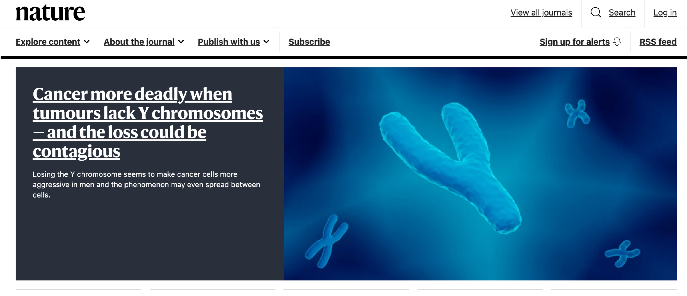

Concurrent loss of the Y chromosome in cancer and T cells impacts outcome
Chen, X., Shen, Y., Choi, S. et al. Nature 642, 1041–1050 (2025). First author. https://doi.org/10.1038/s41586-025-09071-2
In our 2025 Nature study (first authored by me), we demonstrated that age-related loss of the Y chromosome (LOY)—which affects up to 40% of elderly men—occurs not only in tumour cells but also spreads to infiltrating T cells; this "double-LOY" condition cripples anti-tumour immunity and predicts the worst survival across 4,000 male cancer samples and more than one million single-cell profiles. Mechanistically, losing key Y-linked genes (KDM5D, UTY, DDX3Y) weakens tumour antigen presentation, while LOY T cells become exhausted (↓ GZMB/PRF1, ↑ PD-1/CTLA-4), offering an explanation for men's higher cancer burden. These findings argue for routine LOY testing in male-predominant cancers, careful exclusion of LOY T cells from cell therapies, and development of treatments that restore or block LOY-driven immune collapse.
